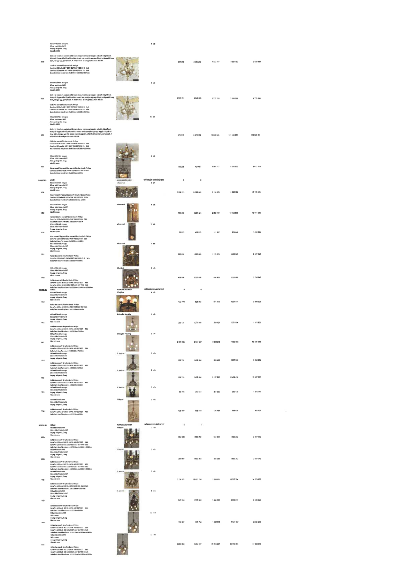

| Tétel | Menny. | Egys. | Anyag e.ár (net HUF) | Díj e.ár (net HUF) | Anyag összesen (net HUF) | Díj összesen (net HUF) | Anyag+Díj összesen (net HUF) |
|---|---|---|---|---|---|---|---|
| V10 Gothárd Erzsébet eredeti csillárok... | 4,0 | db | 334 369 | 2 080 288 | 1 337 477 | 8 321 152 | 9 658 629 |
| V10 Gothárd Erzsébet eredeti csillárok... | 1,0 | db | 3 727 781 | 3 048 055 | 3 727 781 | 3 048 055 | 6 775 836 |
| V11 Gothárd Erzsébet eredeti csillárok... | 30,0 | db | 379 117 | 3 372 152 | 11 373 523 | 101 164 557 | 112 538 080 |
| V37 Mennyezeti függesztékek... | 6,0 | db | 180 236 | 922 650 | 1 081 417 | 5 535 902 | 6 617 319 |
| V18 Mennyezeti lámpatestek... | 1,0 | db | 2 129 273 | 11 596 052 | 2 129 273 | 11 596 052 | 13 725 325 |
| V20 Mennyezeti lámpatestek... | 4,0 | db | 714 730 | 3 288 224 | 2 858 919 | 13 152 898 | 16 011 817 |
| V19 Mennyezeti lámpatestek... | 2,0 | db | 75 823 | 436 823 | 151 647 | 873 646 | 1 025 293 |
| V21 Falikarok... | 4,0 | db | 280 920 | 1 295 990 | 1 123 678 | 5 183 960 | 6 307 638 |
| V40 Csillárok... | 1,0 | db | 408 950 | 2 327 898 | 408 950 | 2 327 898 | 2 736 848 |
| V39 Falikarok... | 4,0 | db | 172 778 | 826 853 | 691 112 | 3 307 414 | 3 998 526 |
| V41 Csillárok... | 1,0 | db | 200 124 | 1 271 808 | 200 124 | 1 271 808 | 1 471 932 |
| V41 Csillárok... | 3,0 | db | 2 870 105 | 2 597 937 | 8 610 316 | 7 793 812 | 16 404 128 |
| V25 Csillárok... | 2,0 | db | 269 733 | 1 428 684 | 539 465 | 2 857 369 | 3 396 834 |
| V23 Csillárok... | 8,0 | db | 269 733 | 1 428 684 | 2 157 862 | 11 429 470 | 13 587 337 |
| V24 Falikarok... | 3,0 | db | 85 768 | 317 813 | 257 303 | 953 438 | 1 210 741 |
| V34 Csillárok... | 1,0 | db | 135 488 | 668 639 | 135 488 | 668 639 | 804 127 |
| V01d Csillárok... | 4,0 | db | 384 063 | 1 683 252 | 1 536 252 | 6 733 008 | 8 269 260 |
| V01d Csillárok... | 1,0 | db | 384 063 | 1 683 252 | 384 063 | 1 683 252 | 2 067 315 |
| V15 Csillárok... | 1,0 | db | 2 236 171 | 12 037 704 | 2 236 171 | 12 037 704 | 14 273 875 |
| V33 Csillárok... | 6,0 | db | 247 359 | 1 335 946 | 1 484 152 | 8 015 677 | 9 499 829 |
| V14 Csillárok... | 11,0 | db | 136 607 | 683 754 | 1 502 676 | 7 521 297 | 9 023 973 |
| V14 Csillárok... | 12,0 | db | 1 850 839 | 1 264 567 | 2 210 067 | 15 174 803 | 37 384 870 |
